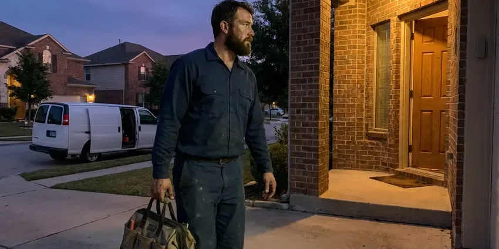

Clogged Sewer Line in Paragould, AR
A clogged sewer line in Paragould, AR is a health hazard. Our team arrives equipped to clear it, sanitize and prevent a repeat.
- Professional Sewer Clearing
- Root Cutting and Hydro Jetting
- Assured satisfaction
- Accurate diagnostics

Need Clogged Sewer Line Service in Paragould, AR?
Call now and a sewer technician will be on the way with cable machines, jetting equipment and a camera.
Expert Clogged Sewer Line Clearing in Paragould, AR
DGR Plumbing has cleared sewer lines blocked by tree roots, grease, wipes and collapsed clay pipe. We work clean, protect your floors and explain exactly what caused the blockage so you can plan for the future.
Our expertise includes:
- High-pressure hydro jetting for grease and scale in main lines
- Sewer camera inspection for accurate diagnosis
- High-pressure hydro-jetting for stubborn blockages

Additional Plumbing Maintenance Services in Paragould, AR
Our maintenance and specialty plumbing services in Paragould, AR catch small problems before they become emergencies.


Customers
Why Choose DGR Plumbing for Clogged Sewer Line in Paragould, AR?
Our team is trained on the latest techniques and equipped with commercial-grade tools to handle even the most difficult sewer line clogs, protecting your property from costly water damage.
- Honest Advice, If cleaning is enough, we tell you so rather than pushing a replacement.
- Camera Proof, You see the inside of your sewer line on screen before any repair decision is made.
- Lasting Solutions, Our goal is not just to clear the immediate clog, but to find underlying causes to prevent future issues.
Citywide Coverage
DGR Plumbing is proud to serve every neighborhood in Paragould, providing fast and professional clogged sewer line services. Whether you are in the heart of downtown or the surrounding suburbs, our teams are ready to respond.
Experienced Team
Every technician is trained on cable machines, jetters and inspection cameras. They also know how to work around older clay and Orangeburg pipe without making a weak section worse.
Safety-First Approach
Sewage contains bacteria and viruses, so our crews wear protective gear and contain any spill. We clean and disinfect the work area before we leave.
Trusted Certified Paragould Plumbing Services Professionals
At DGR Plumbing, we take pride in providing licensed, certified plumbing services throughout Paragould, AR. Backed by leading industry credentials, our experienced plumbers combine technical skill with genuine customer care. Whether it is repair, installation, or maintenance, we follow strict safety and quality standards to deliver lasting results you can trust.
Call Us Now PHCC Plumbing Contractor Recognition
PHCC Plumbing Contractor Recognition Better Business Bureau (BBB) Accreditation
Better Business Bureau (BBB) Accreditation Angi Certified Pro
Angi Certified Pro ISO 9001 Quality Management Certification
ISO 9001 Quality Management CertificationProven Clogged Sewer Line Services in Paragould, AR
Preventative Sewer Line Maintenance in Paragould
Regular maintenance can greatly reduce the risk of future clogged sewer lines, especially for homes in Paragould with older plumbing or heavy tree cover. DGR Plumbing offers scheduled sewer line cleanings and inspections to prevent buildup of grease, sludge, and minor root growth before they become major problems. Our preventative services extend the life of your sewer system and save you from surprise, costly repairs.

Main Line Hydro Jetting in Paragould
Hydro jetting uses water at thousands of psi through a specialized nozzle to cut roots, grease and scale. It cleans the full diameter of the pipe rather than just boring a hole through the clog. We check the pipe condition with a camera first so jetting is only used on lines that can handle it. Many homeowners find that jetting buys them years before another backup.
Cleaning vs. Repairing a Sewer Line in Paragould, AR
If the camera shows a sound pipe with a grease or root clog, cleaning is usually all you need. Cracked, offset or collapsed pipe will keep clogging no matter how often it is cleared. Cleaning typically costs a few hundred dollars, while repairs range from a spot fix to trenchless lining or full replacement. We walk you through the footage and costs so you can decide.
Identifying and Repairing Damaged Pipes in Paragould
Sometimes, a recurring clog indicates a more significant issue, like a damaged, cracked, or collapsed sewer pipe. Our camera inspections can identify these structural problems. While our primary service is clearing clogs, if we find pipe damage, DGR Plumbing can provide expert recommendations for repair or replacement options, from trenchless methods to traditional excavation, for a long-term solution in Paragould.
Tree Root Invasion Removal in Paragould
Many properties in Paragould feature mature trees, whose roots are a major cause of sewer line clogs. Tree roots naturally seek water and can penetrate even tiny cracks in sewer pipes, growing into dense masses that block flow. We use specialized cutting tools and high-pressure hydro-jetting to fully remove these root intrusions. Following removal, we can inspect the pipe with a camera to assess damage and recommend long-term solutions, like pipe lining or replacement.
Commercial Clogged Sewer Line Service in Paragould
Commercial properties in Paragould often face special challenges with their sewer systems due to higher usage and different types of waste. DGR Plumbing offers specialized commercial clogged sewer line services, understanding the need for limited disruption to your business operations. We quickly diagnose and resolve blockages in restaurants, offices, and other commercial buildings, using appropriate industrial-grade equipment.
Emergency Sewer Backup Service in Paragould, AR
Sewage coming up through a shower or floor drain needs immediate attention. Our emergency crews stop the backup, clear the line and help contain the mess. We can refer you to a cleanup and restoration crew if sewage reached carpet or drywall. We also provide photos and notes for insurance claims.

Emergency Sewer Line Clog Clearing in Paragould, AR
A completely blocked sewer line is a serious emergency that can lead to raw sewage backing up into your home or business. DGR Plumbing provides fast emergency clogged sewer line services throughout Paragould, AR. Our technicians are available to respond fast, bringing the necessary tools and expertise to address your urgent plumbing crisis and minimize damage.
Clogged Sewer Line Service Near Me in Paragould, AR
We are committed to serving the Paragould community with reliable, high-quality sewer line services, so your plumbing issues are resolved efficiently and effectively. Our team is always ready to assist residents and businesses across the area.
Local crews understand which neighborhoods have older clay laterals, which have heavy tree cover and how city sewer taps are configured. That knowledge speeds up diagnosis. It also helps us coordinate with the city when the clog is on the city side.
DGR Plumbing at a Glance
- Fully licensed plumbing team covering Paragould, AR
- 24/7 emergency service with same-day scheduling
- Clear written estimates, no hidden fees
- 4.8-star rated by 871+ Arkansas customers
Paragould Map
Paragould Information
- Population
- 30,520
- Area codes
- Local
- Service area
- Paragould and communities within 40 miles
- Nearby
- Jonesboro, Sherwood, Conway, North Little Rock
Homes here are split between crawlspace and slab construction, and crawlspaces allow more direct access for repairs and repiping. Effective clogged sewer line service is crucial for homes in Paragould, AR, where mature trees and shifting ground can contribute to pipe damage and root intrusion.
Expert Services
Trust our professionals for reliable DGR Plumbing solutions in Paragould, AR.
Our Specialized Plumbing Services in Paragould, AR
At DGR Plumbing, we provide a complete range of plumbing services across Paragould, AR. From leak detection to full system installations, our team ensures fast, precise, and affordable service for both residential and commercial properties. Explore our core services below:


How Our Clogged Sewer Line Service Works in Paragould, AR
DGR Plumbing follows a clear process to deliver reliable and lasting solutions for your sewer line problems.
Request a Quote
Contact DGR Plumbing by calling (501) 251-9708 to schedule an appointment. We'll discuss your symptoms and provide an estimated service window for our skilled plumbers to visit your property.
On-Site Inspection
Our technicians arrive equipped for a thorough inspection, often relying on sewer cameras to accurately locate and identify the cause of the clog in your sewer line.
Expert Clearing
Based on the inspection, we apply the most effective method, such as hydro-jetting or snaking, to clear the blockage and restore proper flow to your sewer system.
Frequently Asked Questions About Clogged Sewer Line in Paragould
The cost to clear a clogged sewer line in Paragould, AR can range from $250 to $700, depending on the severity of the clog, the method required (e.g., snaking vs. hydro-jetting), and whether camera inspection is needed. Complex issues like extensive root intrusion or pipe damage will be on the higher end, as they may require more intensive work.
To prevent future clogs, avoid flushing anything but human waste and toilet paper. Be careful about pouring grease down kitchen drains, use drain screens, and consider periodic professional drain cleanings, especially if you have mature trees near your sewer lines in Paragould.
Most main line clearings take one to two hours. Severe root intrusion or lines without a cleanout can take longer. Camera inspection adds roughly 30 to 60 minutes.
Multiple drains backing up at once, gurgling toilets when the washer drains and sewage odors in the house are classic signs. Water rising in the shower when you flush a toilet is another strong clue. Wet spots or sewage smell near the cleanout outdoors can also signal a clog.
Minor sewer line cleanings typically do not require a permit. However, if the clog calls for extensive repair work, such as replacing a section of the sewer line, a permit from your local permitting department will likely be required for code compliance. DGR Plumbing handles all required permitting.
Keep grease, wipes, paper towels and feminine products out of drains and toilets. Plant trees well away from the sewer line. Scheduled cleaning every one to two years helps homes with older pipe or dense tree cover.
Common signs include multiple drains backing up simultaneously, sewage odors coming from drains, gurgling sounds from toilets or drains, and water backing up in unusual places like the shower when the toilet is flushed. These indicate a blockage further down your main sewer line, not just a localized drain issue.
DGR Plumbing uses professional-grade equipment from reputable brands known for their reliability and effectiveness in sewer line service. This includes Ridgid for drain cleaning machines and various quality manufacturers for our sewer cameras and hydro-jetting equipment, for top performance in your Paragould home.
What People Are Saying About Our Plumbing Experts?

James P.
Our commercial plumbing system had a leak under the sink, and DGR Plumbing handled it professionally. The plumbers arrived quickly and restored everything without disruption to our customers.
Commercial Plumbing · Sherwood, AR
Daniel K.
A pipe burst at 11 pm and they actually answered. The plumber showed up within the hour, shut everything down, and had us back to normal the next morning. Could not ask for more.
Emergency Plumbing · Little Rock, ARRobert G.
The trenchless sewer replacement saved our front yard. They walked us through the camera inspection footage first so we knew exactly what we were paying for.
Sewer Line Replacement · Little Rock, AR
Emily R.
I called DGR Plumbing for plumbing repair, and the technician was fast, polite, and thorough. They explained the problem clearly and fixed it the same day. I will definitely hire them again. Highly recommended!
Plumbing Repair · Pine Bluff, AR
Sofia M.
Two new toilets installed in one visit, no mess left behind, and the tech even adjusted a faucet he noticed was dripping. Fair pricing and really friendly.
Toilet Installation · North Little Rock, AR
Mark T.
When our office needed drain cleaning, DGR Plumbing provided quick, reliable service. The plumber arrived on time and made sure every drain flowed perfectly before leaving. Very satisfied.
Drain Cleaning · Pine Bluff, AR